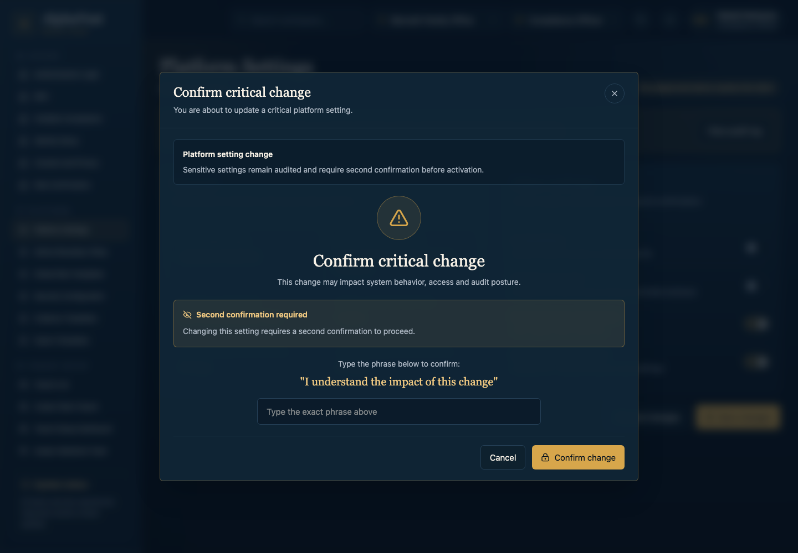
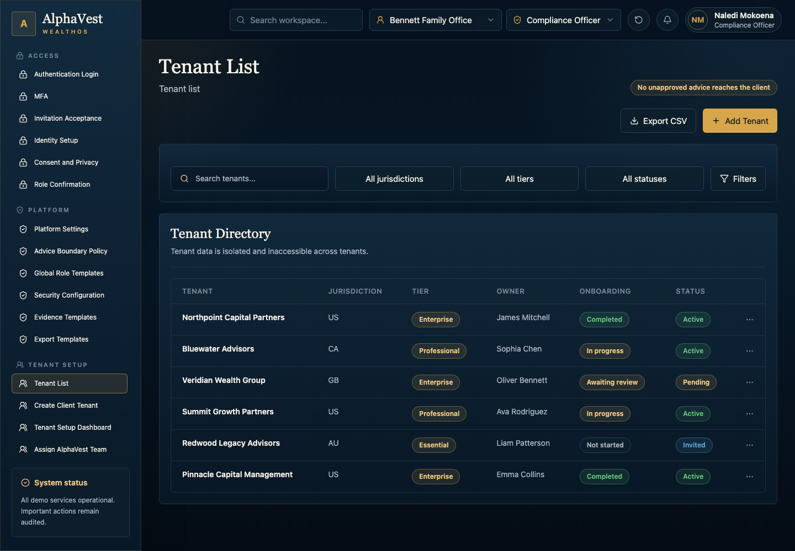
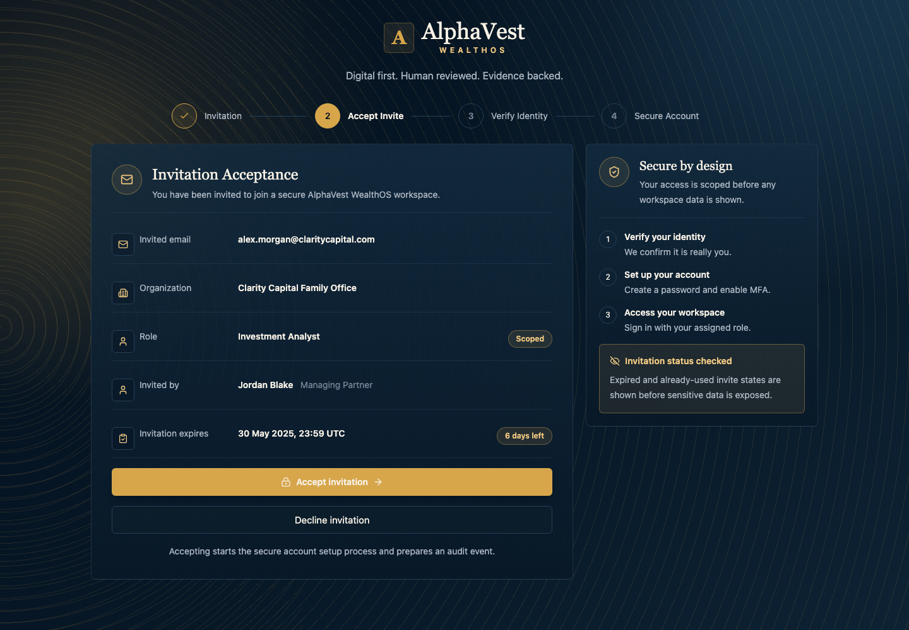
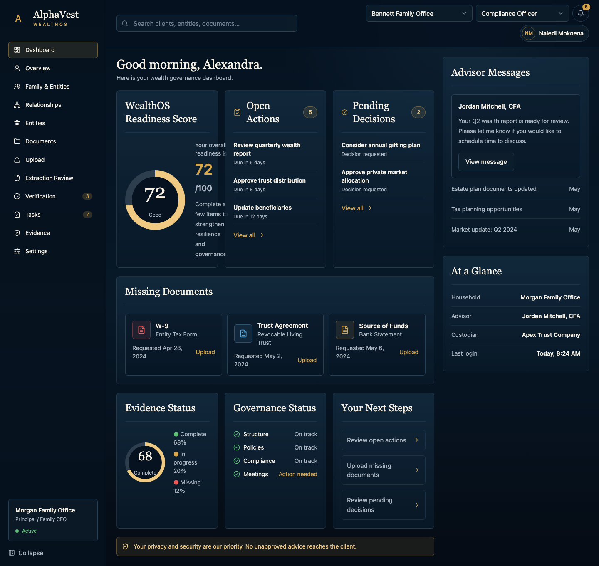
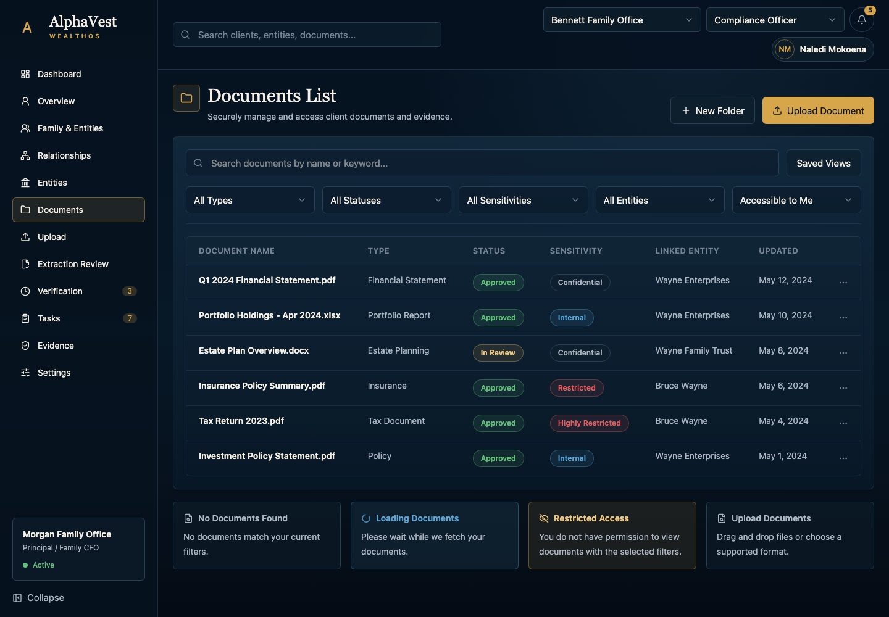
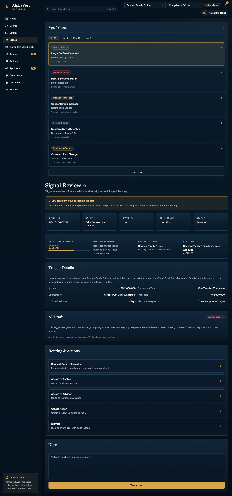

This manual is organized around user tasks, not technical paths. Start with your role, then open the task chapter that matches the outcome you want to achieve.
Important: Advice-like material cannot become client-visible until advisor review, compliance release, evidence, and permission checks allow it. Advisor approval alone is not client release.
Confirm your demo role and tenant context.
Use the task chapter for your goal.
Check required information before starting.
Review result and blocked-state guidance before moving to the next workflow.
Demo Boundaries And Safety Principles
Current Demo Boundaries
Real production authentication is intentionally deferred.
No real client data is used.
File upload, extraction, export package generation, share links, and full governance transactions are not claimed as production-complete.
Implementation notes identify where behavior is navigable, demonstrational, or partially executable.
Product Principles
Digital first.
Human reviewed.
Evidence backed.
Compliance release controls client visibility.
Sensitive actions require audit treatment.
Roles And Core Concepts
Role Group
Typical Work
Platform Admin / Compliance / Security Officer
Configure platform policy, role templates, evidence requirements, security defaults, and export defaults.
Accept invitation, confirm identity context, acknowledge consent, and confirm role scope.
Principal / Family CFO
Maintain profile, family, relationship, entity, decision, evidence, and export context.
Analyst
Review signals, missing evidence, document status, and internal work routing.
Senior Wealth Advisor
Review recommendation packages and approve, revise, request more data, or escalate without client release.
Compliance Officer
Release, block, or request evidence for advice-like content.
Ops / Product / QA / Leads
Monitor queues, SLA risk, service blueprint, roadmap, and state references.
Core Concepts
Demo session A non-production role and tenant context used before real authentication.
No unapproved advice Advice-like content cannot reach clients until advisor approval, compliance release, evidence, and permission checks pass.
Advisor approval Human advisor review stage that still stays internal.
Compliance release Final compliance control for client visibility.
Evidence record Proof package for important actions, decisions, and releases.
Audit event Append-only proof that a sensitive action occurred or was denied.
Redaction Removal or masking of sensitive fields before export/share.
Second confirmation Extra confirmation for sensitive role, policy, manage, revoke, assign, or release actions.
Restricted state User can see a blocked/restricted explanation instead of inaccessible data.
Reference-only page Internal documentation/product page, not a client workflow.
Getting Started
Open the application in the current demo environment.
Confirm the role and tenant context in the demo session controls.
Start from the task area that matches your role.
Review visible state before making a change.
Follow blocked-state messages instead of bypassing them.
Task Guide
Role-Based Workflow Procedures
Each chapter explains the purpose, responsible roles, required information, screenshot context, procedure, result, blocked states, and implementation boundary for one user task.
MT-001 / UF-01 / W-01
PF-A
Configure the platform policy baseline
Platform settings, advice-boundary rules, role templates, security defaults, evidence templates, and export defaults are visible and ready for tenant setup.
Who can do this Platform Admin / Compliance / Security Officer
Entry screen Platform Settings
Required information Platform name; retention default; MFA/session defaults; advice classification rules; role template changes; evidence and export template settings
Current implementation status E3 navigable UI with visible policy states; broad persisted policy transactions are not claimed.

Figure MT-001: Platform Settings task entry screen. Screenshot ID SS-TASK-MT-001.
Procedure
Go to Platform Settings.
Review the visible configure the platform policy baseline context and current workflow state.
Enter or review required information: Platform name; retention default; MFA/session defaults; advice classification rules; role template changes.
Select only actions that are allowed for your role and current evidence/compliance state.
Review any blocked, restricted, or missing-evidence message before continuing.
Confirm the expected result: Policy baseline is reviewed; sensitive changes require confirmation and audit.
Result: Policy baseline is reviewed; sensitive changes require confirmation and audit.
Evidence and audit: Audit expected for policy/security/role changes; evidence templates define later proof requirements.
Client visibility rule: No unapproved advice reaches the client
Task fields
Field
Required
Allowed values
Block
Setting key/value
yes
Known platform setting; bounded value
Second confirmation required
Advice classification
yes
AdviceClassification enum
Compliance review required
Branches And Blocked States
Condition
User can do
User cannot do
Next step
Happy path / intended demo path
Review, select, enter, or confirm permitted data.
Bypass required gates or tenant/role scope.
Policy baseline is reviewed; sensitive changes require confirmation and audit.
Blocked, restricted, or incomplete path
Review the reason, request evidence, change role, or return to the correct prior step.
Force completion or claim persistence when the app only shows a static/demo state.
Resolve the missing role, evidence, compliance, or data requirement.
MT-002 / UF-02 / W-02
PF-B
Create and prepare a client tenant
A tenant moves from list/create/setup into team assignment, policy selection, and user invitation readiness.
Who can do this Admin / Client Success / Compliance
Entry screen Tenant List
Required information family office name; jurisdiction; service tier; advisor; analyst; compliance owner; client success owner; tenant policy profile; principal invitation
Current implementation status E3 navigable UI; tenant write workflow is a required input-mask slice, not yet fully governed.

Figure MT-002: Tenant List task entry screen. Screenshot ID SS-TASK-MT-002.
Procedure
Go to Tenant List.
Review the visible create and prepare a client tenant context and current workflow state.
Enter or review required information: family office name; jurisdiction; service tier; advisor; analyst.
Select only actions that are allowed for your role and current evidence/compliance state.
Review any blocked, restricted, or missing-evidence message before continuing.
Confirm the expected result: Tenant setup checklist shows whether activation gates are ready or blocked.
Result: Tenant setup checklist shows whether activation gates are ready or blocked.
Evidence and audit: Tenant create, team assignment, policy override, and invitation should be audited.
Client visibility rule: No unapproved advice reaches the client
Task fields
Field
Required
Allowed values
Block
Client name and jurisdiction
yes
Approved jurisdiction list
Duplicate or missing tenant details
Compliance owner
yes
Users with compliance_officer role
Activation remains blocked
Branches And Blocked States
Condition
User can do
User cannot do
Next step
Happy path / intended demo path
Review, select, enter, or confirm permitted data.
Bypass required gates or tenant/role scope.
Tenant setup checklist shows whether activation gates are ready or blocked.
Blocked, restricted, or incomplete path
Review the reason, request evidence, change role, or return to the correct prior step.
Force completion or claim persistence when the app only shows a static/demo state.
Resolve the missing role, evidence, compliance, or data requirement.
MT-003 / UF-03 / W-03
PF-B
Accept an invitation and complete onboarding
The invited user accepts the invitation, confirms identity/MFA, accepts privacy/consent, and acknowledges role scope.
Who can do this Invited User
Entry screen Invitation Acceptance
Required information invite token; name; email confirmation; MFA method; consent version; role acknowledgement
Current implementation status E2/E3 visual and navigable onboarding surfaces; no real authentication claim.

Figure MT-003: Invitation Acceptance task entry screen. Screenshot ID SS-TASK-MT-003.
Procedure
Go to Invitation Acceptance.
Review the visible accept an invitation and complete onboarding context and current workflow state.
Enter or review required information: invite token; name; email confirmation; MFA method; consent version.
Select only actions that are allowed for your role and current evidence/compliance state.
Review any blocked, restricted, or missing-evidence message before continuing.
Confirm the expected result: User reaches role confirmation; production auth remains intentionally deferred.
Result: User reaches role confirmation; production auth remains intentionally deferred.
Evidence and audit: Consent and onboarding audit expected; no real auth is introduced in this demo-first phase.
Client visibility rule: No unapproved advice reaches the client
Task fields
Field
Required
Allowed values
Block
Invite token
yes
Valid active invitation
Invalid invitation state
Privacy acknowledgement
yes
Active consent policy
Cannot continue without consent
Branches And Blocked States
Condition
User can do
User cannot do
Next step
Happy path / intended demo path
Review, select, enter, or confirm permitted data.
Bypass required gates or tenant/role scope.
User reaches role confirmation; production auth remains intentionally deferred.
Blocked, restricted, or incomplete path
Review the reason, request evidence, change role, or return to the correct prior step.
Force completion or claim persistence when the app only shows a static/demo state.
Resolve the missing role, evidence, compliance, or data requirement.
MT-004 / UF-04 / W-04
PF-C
Submit client profile and family context
Client profile, family members, and relationships provide context for later decisions and access.
Who can do this Principal / Family CFO
Entry screen Client Web Dashboard
Required information family profile; governance preferences; family member details; relationship type; ownership or beneficiary links; missing-evidence notes
Current implementation status E3 navigable UI with static/demo data; profile persistence is a P0/P1 implementation need.

Figure MT-004: Client Web Dashboard task entry screen. Screenshot ID SS-TASK-MT-004.
Procedure
Go to Client Web Dashboard.
Review the visible submit client profile and family context context and current workflow state.
Enter or review required information: family profile; governance preferences; family member details; relationship type; ownership or beneficiary links.
Select only actions that are allowed for your role and current evidence/compliance state.
Review any blocked, restricted, or missing-evidence message before continuing.
Confirm the expected result: Profile and relationship context is visible with conflicts or missing evidence flagged.
Result: Profile and relationship context is visible with conflicts or missing evidence flagged.
Evidence and audit: Profile/family edits should create audit events and review tasks.
Client visibility rule: No unapproved advice reaches the client
Task fields
Field
Required
Allowed values
Block
Family profile and objective
yes
Profile taxonomy
Submitted for review or blocked
Family member role
yes
Principal, CFO, Trustee, Beneficiary, Next Gen
Conflict or missing relationship
Branches And Blocked States
Condition
User can do
User cannot do
Next step
Happy path / intended demo path
Review, select, enter, or confirm permitted data.
Bypass required gates or tenant/role scope.
Profile and relationship context is visible with conflicts or missing evidence flagged.
Blocked, restricted, or incomplete path
Review the reason, request evidence, change role, or return to the correct prior step.
Force completion or claim persistence when the app only shows a static/demo state.
Resolve the missing role, evidence, compliance, or data requirement.
Current implementation status E3 navigable UI; no real file storage/extraction transaction is claimed.

Figure MT-006: Documents List task entry screen. Screenshot ID SS-TASK-MT-006.
Procedure
Go to Documents List.
Review the visible upload and verify a document context and current workflow state.
Enter or review required information: document file; document type; entity/asset link; sensitivity; notes.
Select only actions that are allowed for your role and current evidence/compliance state.
Review any blocked, restricted, or missing-evidence message before continuing.
Confirm the expected result: Document reaches verification-pending or needs-clarification state.
Result: Document reaches verification-pending or needs-clarification state.
Evidence and audit: Upload, extraction review, document version, and evidence link should audit.
Client visibility rule: No unapproved advice reaches the client
Task fields
Field
Required
Allowed values
Block
Document file/type/scope
yes
Allowed file types and document taxonomy
Upload error / verification pending
Corrected extracted value
conditional
Extracted payload fields
Needs clarification
Branches And Blocked States
Condition
User can do
User cannot do
Next step
Happy path / intended demo path
Review, select, enter, or confirm permitted data.
Bypass required gates or tenant/role scope.
Document reaches verification-pending or needs-clarification state.
Blocked, restricted, or incomplete path
Review the reason, request evidence, change role, or return to the correct prior step.
Force completion or claim persistence when the app only shows a static/demo state.
Resolve the missing role, evidence, compliance, or data requirement.
MT-007 / UF-07 / W-07
PF-E
Process a signal and route internal work
The analyst reviews an internal-only trigger, requests data or routes to advisor, and keeps client visibility blocked.
Who can do this Analyst
Entry screen Signal Review
Required information signal ID; missing beneficial owner; purpose of wire; source of funds; analyst note; route decision
Current implementation status canonical typed boundary (legacy compatibility bridge) for J01 request-data; full signal governance is not yet implemented.

Figure MT-007: Signal Review task entry screen. Screenshot ID SS-TASK-MT-007.
Procedure
Go to Signal Review.
Review the visible process a signal and route internal work context and current workflow state.
Enter or review required information: signal ID; missing beneficial owner; purpose of wire; source of funds; analyst note.
Select only actions that are allowed for your role and current evidence/compliance state.
Review any blocked, restricted, or missing-evidence message before continuing.
Confirm the expected result: Trigger moves toward awaiting information or advisor review while staying internal-only.
Result: Trigger moves toward awaiting information or advisor review while staying internal-only.
Evidence and audit: J01 request-data actions use the canonical typed boundary (legacy compatibility bridge); typed recommendation-review command APIs define the canonical product path and carry audit expectations.
Client visibility rule: No unapproved advice reaches the client
Task fields
Field
Required
Allowed values
Block
Analyst route decision
yes
Request Data / Assign / Route / Dismiss
Internal-only state
Branches And Blocked States
Condition
User can do
User cannot do
Next step
Happy path / intended demo path
Review, select, enter, or confirm permitted data.
Bypass required gates or tenant/role scope.
Trigger moves toward awaiting information or advisor review while staying internal-only.
Blocked, restricted, or incomplete path
Review the reason, request evidence, change role, or return to the correct prior step.
Force completion or claim persistence when the app only shows a static/demo state.
Resolve the missing role, evidence, compliance, or data requirement.
MT-008 / UF-08 / W-08
PF-E
Review an advisor approval package
Advisor approves, revises, requests more data, or escalates without releasing to the client.
Who can do this Senior Wealth Advisor
Entry screen Advisor Approval Queue
Required information recommendation ID; advisor decision; rationale; conditions; escalation reason
Current implementation status canonical typed boundary (legacy compatibility bridge) for J01 advisor actions; advisor approval is internal and not client visibility.
Review the visible review an advisor approval package context and current workflow state.
Enter or review required information: recommendation ID; advisor decision; rationale; conditions; escalation reason.
Select only actions that are allowed for your role and current evidence/compliance state.
Review any blocked, restricted, or missing-evidence message before continuing.
Confirm the expected result: Advisor decision is recorded or routed; compliance release remains required.
Result: Advisor decision is recorded or routed; compliance release remains required.
Evidence and audit: Advisor approval should audit; J01 approve/escalate is on the canonical typed boundary (legacy compatibility bridge), while typed recommendation-review commands are the canonical product path.
Client visibility rule: No unapproved advice reaches the client
Task fields
Field
Required
Allowed values
Block
Advisor decision and rationale
yes
Approve, Revise, Request More Data, Escalate
Compliance pending
Branches And Blocked States
Condition
User can do
User cannot do
Next step
Happy path / intended demo path
Review, select, enter, or confirm permitted data.
Bypass required gates or tenant/role scope.
Advisor decision is recorded or routed; compliance release remains required.
Blocked, restricted, or incomplete path
Review the reason, request evidence, change role, or return to the correct prior step.
Force completion or claim persistence when the app only shows a static/demo state.
Resolve the missing role, evidence, compliance, or data requirement.
MT-009 / UF-09 / W-09
PF-F
Release, block, or request evidence for advice-like content
Compliance determines whether content can become client-visible, stays blocked, or needs more evidence.